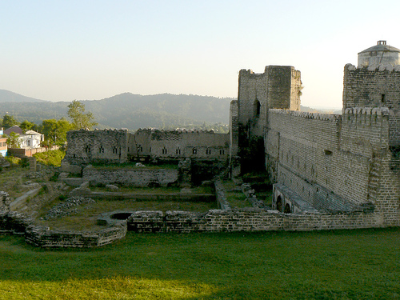
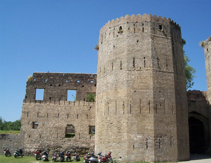
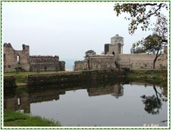
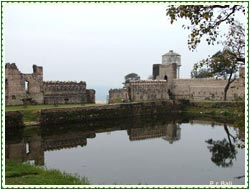
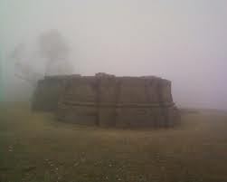
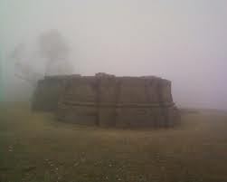
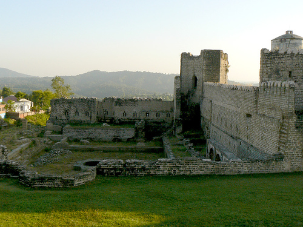
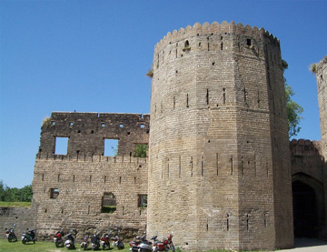
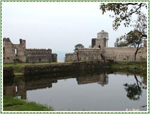
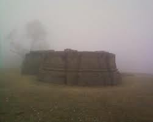

WELCOME TO
KANGRA VALLEY
PLACES OF INTEREST
The Brij Raj Swami temple inside the Nurpur fort is a 16th century historical temple of Lord Krishna and home to a much revered deity of the local population and attracts tourists. It is the only temple in the world, where Lord Krishna and Meera idols are worshipped. It is said the statue of Lord Krishna was worshipped by Meera, and when Raja of Nurpur went to Chittorgarh he got this statue as a return gift from the Maharana of Chittorgarh. Along with this, Raja also brought a Moulsary (a fruit-bearing plant) sampling and it was dried on way back and it was put to life through Puja and chanting of mantras. This plant has now grown into a huge tree. It flowers, but does not bear any fruit unlike such plants in Rajasthan.visitors can see the whole story of nurpur fort in the form of paintings inside the temple. The Nagni Maata temple, located about 6 km from Nurpur town on Pathankot/Kullu highway, is also very famous. It is unique because water comes from below the temple where the idol of Naagni Maata is placed. People who get snake bite, come to Naagni Maata and simply drinking water and applying the Mitti, get cured completely. The amount of water which flows there is quite sufficient, and there are number of water mills installed for grinding grain.
The Nurpur fort is the main attraction of this small town. Originally built before the 10th century, it was the main seat of the Pathania Kings. It was destroyed partially by the British and the great earthquake which hit this region in April 1905 AD. Most of the fortress is in ruins, but it is still worth visiting. the theru wali mata temple is also a good place to see , which is situated on the top of a small hill and about 250m from the pathankot / kullu highway.
 


 


